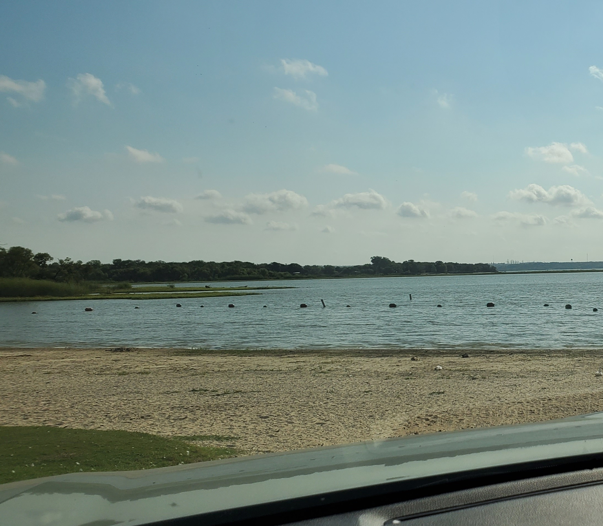
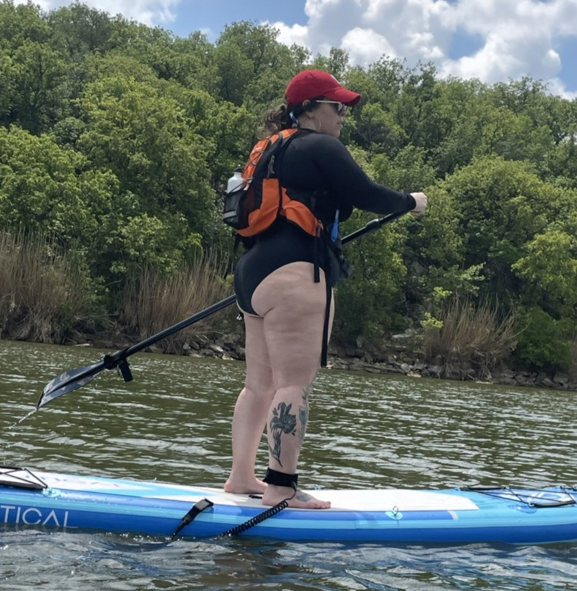
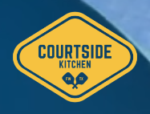

Move, Create, Date
Hiking and Paddleboarding
Panther Island Pavillion, Downtown
Panther Island doubles as the ultimate outdoor sport area and live music venue. They host a ton of concerts
every year and also have walking and biking trails, paddleboard and kayak rentals, and a bike share station.
Panther Island is Downtown, right on the Trinity River. Perfect for a day of adventures!
Panther Island
Shady Grove Park, North Side

Come here to feed the ducks, launch off with your kayak or paddleboard, and enjoy the park.
This is the easiest place to launch for water sports that dont include a boat, and there are
plenty of picnic tables to enjoy a snack when you get off the water.
Shady Grove
Eagle Mountain Lake Trails, North Side

Eagle Mountain has multiple hiking trails for all levels, and all have incredible views of the water.
The Northwest Trail is probably the most difficult, and the terrain is rocky and all hills. Its worth
the view though, as you can see.
Eagle Mountain
Marion Sansom Park, North Side

This 260 acre park overlooks Lake Worth on top of a limestone bluff. It is as breaktaking as it sounds,
and if you're lucky, the waterfall is flowing.
Marion Sansom
Tennis and Pickleball
Courtside Kitchen, University

Not far from both Quince and Woodshed, Courtside Kitchen doubles as a pickelball court as well as a
brunch/lunch stop. You can just book a court, or enjoy the amenities!
Courtside Kitchen
McLeland Tennis Center, South Fort Worth
McLeland Tennis Center has great courts, great staff, and isn't far from Tacos Oasis.
You can book courts for fun, book lessons, or even join a league if you're looking for one! They also
have pickleball, as most tennis courts around here will!
McLeland Tennis Center
Southlake Tennis Center, Southlake
Another great spot for Tennis and Pickleball, and while not necessarily a hidden gem, it's close to Southlake
Town Square, and a Southlake Favorite, Cork & Pig Tavern.
Southlake Tennis Center
Think Outside the Box
SiNaCa Studios, Magnolia
We came here for a compnay Christmas party a few years ago and it was one of the most incredible experiences.
They have group packages as well as date night ones. You actually get to blow your own glass piece, but you
have to be in town to pick it up after. So consider doing this early in your trip if you are only here for
a few days.
Sinaca Studios
Quiggley's Clayhouse, University
Another spot where you get to make your own creations! But here, you can opt to just paint one of their already
pre-made pieces, or make your own! Though pretending like you're in the movie Ghost is probably not advised.
Quiggley's
PinStripes, Clearfork
PinStripes is a bowling alley nestled inside of an incredible restaurant. Brunch, dinner, late night drinks, it's
all here. Clearfork is also an amazing walk and shop spot, so you could spend the day here if you really want to!
PinStripes